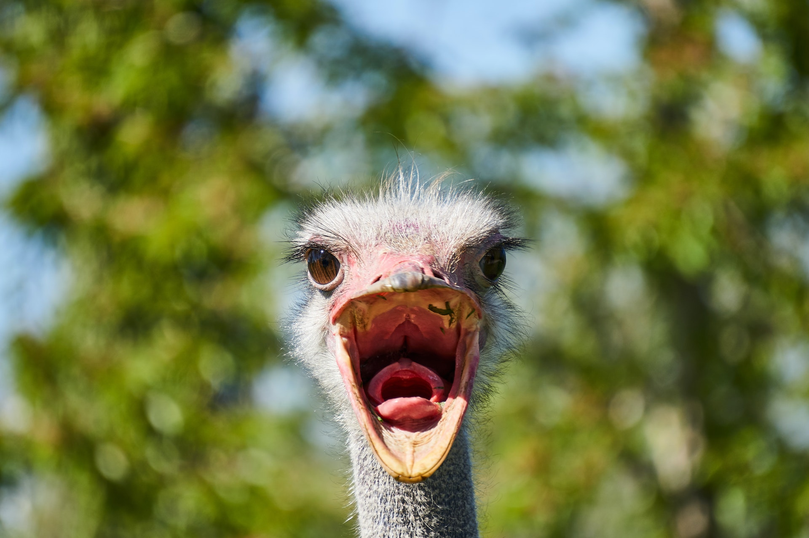

-

- Avestruzes
- Avestruz Chocobo
-
Animal comprido e de porte grande.
Tipo de ave.
Não voa.
-
Alimentação: Pedra, ração e ovos.
- Ovelhas
- Ovelhas macias
-
Animal médio e de porte grande.
Comestível.
Pode-se usar para fazer roupas.
-
Alimentação: Ração.
- Veados
- Veados deer
-
Animal sensível e de porte frágil.
Costuma aparecer na rodovia a noite.
-
Alimentação: Folhas e cogumelos.